A 40-second 16:9 spec spot. The product is the hero: a caret becomes the editor, Tab finishes a real hook, Agent builds a dashboard, and the dashboard folds back into the official Cursor cube. Warm black and warm off-white from Cursor's own palette, one UI typeface, one code typeface, no neon, no glitch.
export function useMetrics(, with realistic key timing.npm run dev, then "ready". A browser preview tab opens.